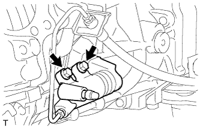

МЕХАНИЧЕСКАЯ ТРАНСМИССИЯ В СБОРЕ > СНЯТИЕ |
| 1. ОТСОЕДИНИТЕ ПРОВОД ОТ ОТРИЦАТЕЛЬНОГО ВЫВОДА АККУМУЛЯТОРНОЙ БАТАРЕИ |
| 2. СНИМИТЕ РУКОЯТКУ РЫЧАГА ПЕРЕКЛЮЧЕНИЯ ПЕРЕДАЧ В СБОРЕ |
Снимите рукоятку с рычага переключения передач.
| 3. СНИМИТЕ ОБЛИЦОВКУ ПАНЕЛИ ПОЛА В СБОРЕ |
 |
Наклейте защитную клейкую ленту вокруг облицовки панели пола.
| *1 | Защитная клейкая лента |
С помощью съемника молдингов расцепите 8 фиксаторов и 2 захвата.
Отсоедините все разъемы и снимите облицовку панели пола.
| 4. СНИМИТЕ ЧЕХОЛ № 1 РЫЧАГА ВЫБОРА И ПЕРЕКЛЮЧЕНИЯ ПЕРЕДАЧ |
 |
Выверните 4 винта и снимите 2 фиксатора и чехол рычага выбора и переключения передач.
| *1 | Фиксатор |
| *2 | Винт |
| 5. СНИМИТЕ НАПОЛЬНЫЙ РЫЧАГ ПЕРЕКЛЮЧЕНИЯ ПЕРЕДАЧ В СБОРЕ |
 |
Закройте крышку рычага переключения передач тканью.
| *1 | Ткань |
| *a | Вниз |
| *b | Против часовой стрелки |
Надавливая на крышку рычага переключения передач, поверните ее против часовой стрелки, чтобы снять.
Вытяните и снимите рычаг переключения передач.
| 6. СНИМИТЕ НИЖНИЙ ЗАЩИТНЫЙ КОЖУХ КАРТЕРА РАЗДАТОЧНОЙ КОРОБКИ |
Выверните 4 болта и снимите нижний защитный элемент.
| 7. СЛЕЙТЕ МАСЛО МЕХАНИЧЕСКОЙ ТРАНСМИССИИ |
Снимите пробку сливного отверстия и прокладку, а затем слейте масло механической трансмиссии.
 |
Снимите пробку наливной горловины и прокладку.
Установите новую прокладку и пробку сливного отверстия.
| 8. СНИМИТЕ ПЕРЕДНИЙ КАРДАННЫЙ ВАЛ В СБОРЕ |
Снимите передний карданный вал (Нажмите здесь).
| 9. СНИМИТЕ КАРДАННЫЙ ВАЛ В СБОРЕ |
Снимите карданный вал (Нажмите здесь).
| 10. ОТСОЕДИНИТЕ РАБОЧИЙ ЦИЛИНДР СЦЕПЛЕНИЯ В СБОРЕ |
|  |
Выверните 2 болта и отсоедините рабочий цилиндр сцепления в сборе.
| 11. СНИМИТЕ СТАРТЕР В СБОРЕ |
Для моделей мощностью 1,4 кВт:
Снимите стартер (Нажмите здесь).
Для моделей мощностью 2,0 кВт:
Снимите стартер (Нажмите здесь).
| 12. СНИМИТЕ ЛЕВЫЙ КРОНШТЕЙН ЭЛЕМЕНТА ПЕРЕДНЕЙ ПОДВЕСКИ |
Выверните 4 болта и снимите кронштейн элемента.
| 13. СНИМИТЕ ПРАВЫЙ КРОНШТЕЙН ЭЛЕМЕНТА ПЕРЕДНЕЙ ПОДВЕСКИ |
Выверните 4 болта и снимите кронштейн элемента.
| 14. СНИМИТЕ ПОПЕРЕЧИНУ РАМЫ № 3 В СБОРЕ |
Подоприте заднюю часть трансмиссии с помощью опорной стойки.
 |
Выверните 4 болта из подушки опоры.
 |
Выверните 4 болта, отверните 4 гайки и снимите поперечину рамы.
| 15. СНИМИТЕ ЗАДНЮЮ ПОДУШКУ ОПОРЫ ДВИГАТЕЛЯ № 1 |
Выверните 5 болтов и снимите подушку передней опоры двигателя и подушку опоры.
| 16. СНИМИТЕ ОПОРУ КОЛЛЕКТОРА |
 |
Отверните 3 болта и снимите опору коллектора.
| 17. ОТСОЕДИНИТЕ ЖГУТ ПРОВОДОВ |
Отсоедините 2 разъема и 4 зажима.
| 18. ОТСОЕДИНИТЕ ШЛАНГ САПУНА МЕХАНИЧЕСКОЙ ТРАНСМИССИИ И РАЗДАТОЧНОЙ КОРОБКИ В СБОРЕ |
Отсоедините 3 шланга сапуна от переходника раздаточной коробки и раздаточной коробки.
Отсоедините 2 шланга сапуна от кронштейна.
| 19. СНИМИТЕ БЛОК МЕХАНИЧЕСКОЙ ТРАНСМИССИ В СБОРЕ |
Поддомкратьте трансмиссию с помощью телескопического гидравлического домкрата.
Снимите опорную стойку с трансмиссии.
Выверните 8 болтов и снимите блок трансмиссии.
| 20. СНИМИТЕ РАЗДАТОЧНУЮ КОРОБКУ В СБОРЕ |
 |
Для моделей с 1KD-FTV:
| *A | Для моделей с 1KD-FTV, RA61F |
| *B | Для моделей с 1KD-FTV, A750F |
 |
Кроме моделей с 1KD-FTV:
Выверните 8 болтов и снимите кронштейн.
Отсоедините раздаточную коробку от трансмиссии.